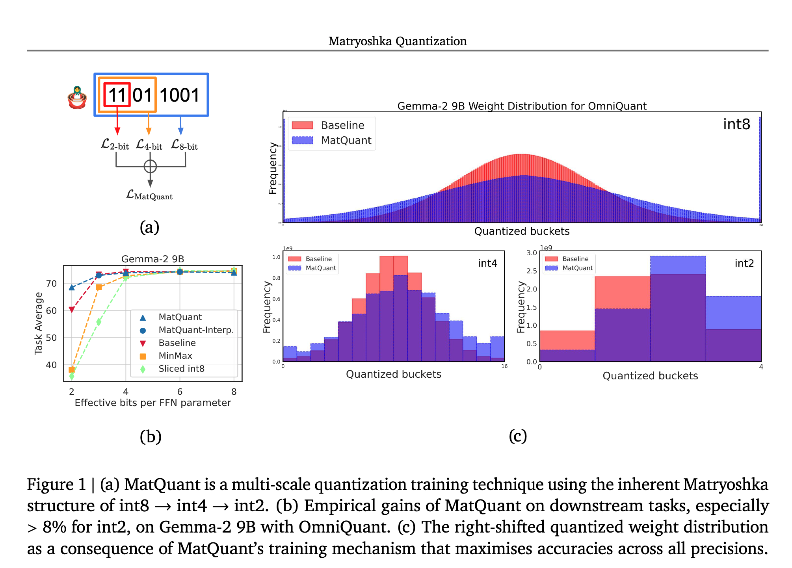
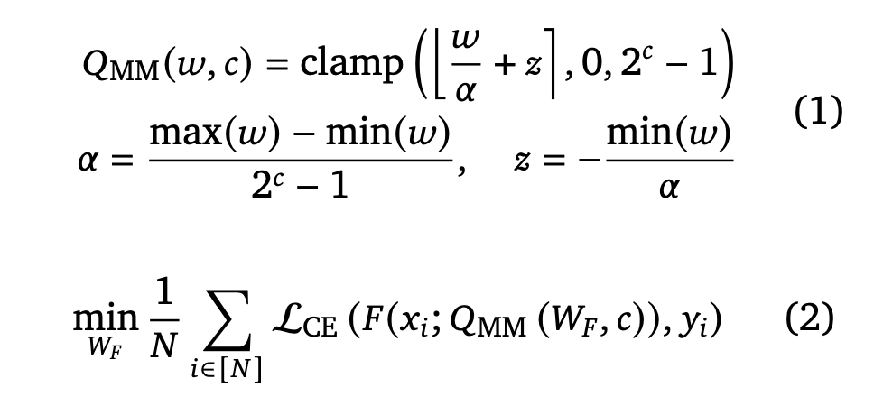
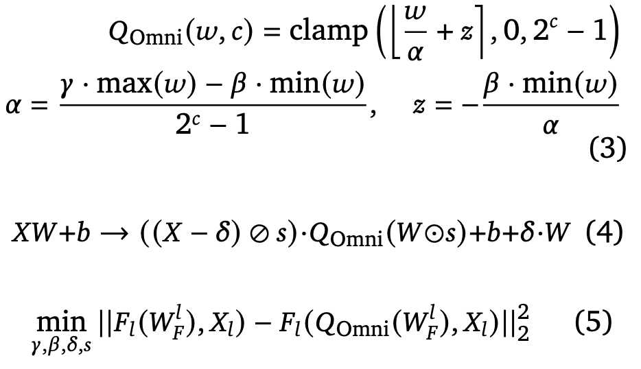
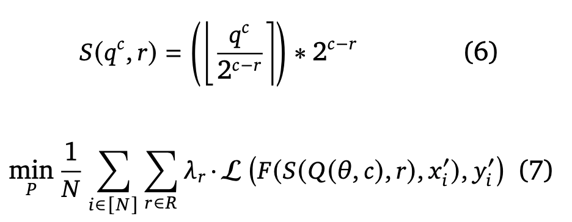
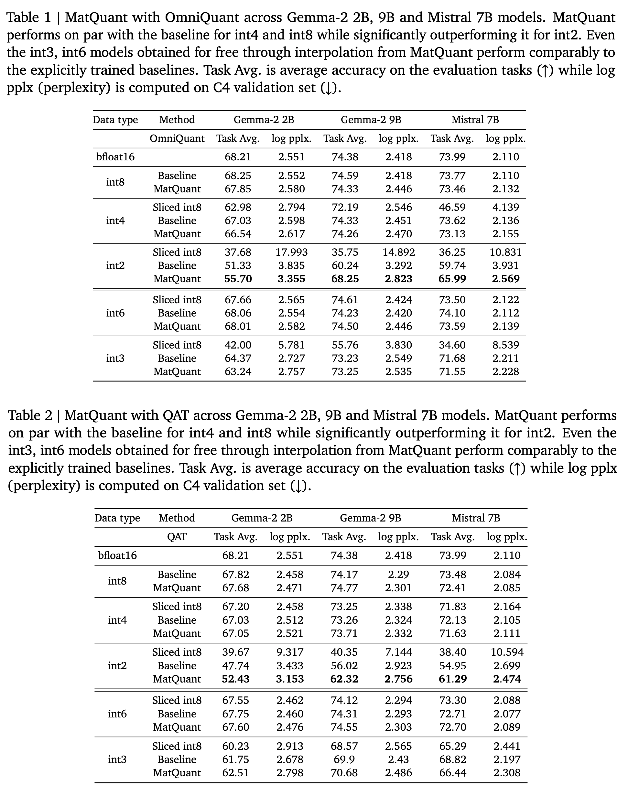

Matryoshka Quantization
papers
summary
research
quantization llms
Another fantastic paper from GDM! MatQuant came out last week. It was a very refreshing read.

Introduction
- Quantizing model weights is critical for reducing the communication and inference costs of LLMs.
- Extreme low precisions like int4 or int2 result in severe degradation in the quality of outputs of these models.
- The authors propose Matryoshka Quantization (MatQuant), a novel multi-scale quantization technique that addresses the need for multiple quantized models.
- MatQuant allows training and maintaining just one model that can be served at different precision levels.
- int2 precision models extracted by MatQuant can be up to 10% more accurate than standard int2 quantization.
- It works seamlessly with other quantization techniques like Quantization Aware Training (QAT)and OmniQuant.
Preliminaries
1. Quantized Aware Training
- QAT learns a 𝑐-bit quantized model by optimizing for the end-to-end cross-entropy loss using gradient descent.
- The MinMax quantization of a real-valued vector \(𝑤\) in \(𝑐\) bits can be formulated as shown below. \(Q(𝑤, 𝑐)\) is the 𝑐-bit quantized version of \(𝑤\), \(𝛼\) is the scaling factor, and \(𝑧\) is the zero point. If W represents weights of a Transformer LLM, \(D = {(𝑥1, 𝑦1), ...., (𝑥𝑁, 𝑦𝑁)}\) a labeled dataset, F the forward pass, \(L_{CE}\) the cross-entropy loss, then QAT can be optimized as:

2. OmniQuant
- Learns scaling and shifting parameters 𝛾 and 𝛽 through gradient descent over layer-wise L2 error reconstruction.
- Like QAT, it uses a straight-through estimator during optimization, but unlike QAT, it operates with limited data, making it much more attractive for resource-scarce settings.
- It adds another set of learnable shifting and scaling parameters to the FFN’s affine projections.
- Mathematically, the MinMax quantization in this case and the corresponding objective function for optimizing OmniQuant are:

Proposed Method: MatQuant
- The idea is to develop a single model that works well at different precisions.
- Leverages the inherent Matryoshka nature of the integer data type, meaning if you want to extract a \(𝑟\)-bit model from a \(𝑐\)-bit model \((0 < 𝑟 < 𝑐)\), you can slice out the $𝑟 $most significant bits using a right shift, followed by a left shift of the same order.
- Let \(𝑅 = {\{𝑟_1, 𝑟_2, ..., 𝑟_𝐾\}}\) be the bit-widths you want to optimize for, \(𝑄(·, )\) represent the quantization function of the base algorithm (i.e., any learning-based quantization scheme), \(L (·)\) represent the loss function, \(𝐹 (·)\) represent the forward pass, \(𝜃\) represent the set of model/auxiliary parameters and let \(𝑊_𝐹\) represent the model parameters. The slicing operation and the objective function can mathematically be formulated as shown below
- \(𝜆_𝑟\) is a loss reweighing factor for bit-width. For this paper, three values of \(R={\{8, 4, 2\}}\) are used, and a grid search is performed over \(𝜆_𝑟\).

Some observations
- MatQuant alters the quantized weight distributions across precision levels compared to the base quantization algorithm (OmniQuant or QAT).
- Weights quantized with MatQuant tend to use higher-valued weights more. This is beneficial for int2 precision models. (check topmost figure)
- Although MatQuant was trained for three precisions (int8, int4, int2), the resulting model, when quantized to interpolated bit-widths like int6 & int3 by slicing the int8 model, performs on par with a baseline trained explicitly for that precision.
- We can use different precisions at different layers through layer-wise Mix’n’Match for MatQuant models. The authors found that having a higher precision (int8) in the middle layers and a lower precision (int2) at the start and end is Pareto-optimal.
Experimental Setup
- Comparison with QAT and OmniQuant
- FFN block is the target for quantization
- Three precisions: int8, int4, int2
- Models: Gemma and Mistral
- Data: Differently sampled for different strategies, but mostly from C4
Results
So, how does MatQuant perform compared to the other quantization methods for different precisions? Here are some results:

Weightings \(𝜆_𝑟\) for MatQuant
- Found using grid search for different precisions.
- Equal weighting for all precisions works well.
- Higher weights for a specific precision result in increased accuracy for that bit-width. This re-weighting to improve int8 and int4 models often results in a minor accuracy drop for the int2 models.
Limitations
Extending MatQuant to floating-point representations, such as FP8 and FP4, presents significant challenges. Slicing, in this case, results in buckets whose sizes increase exponentially, unlike the integer case, where bucket sizes are constant.